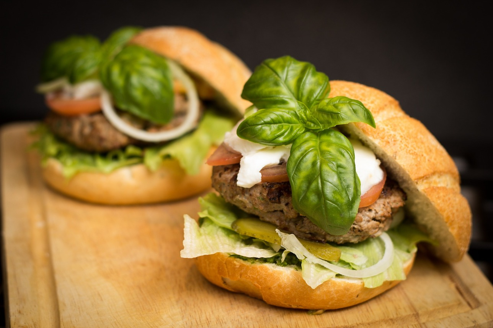
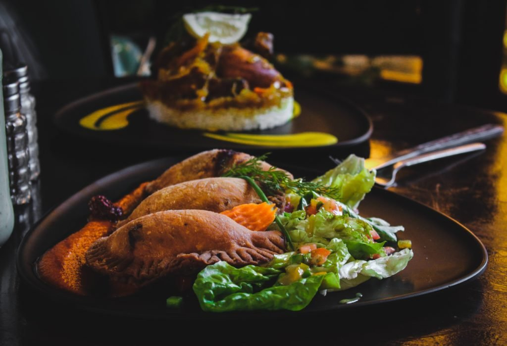
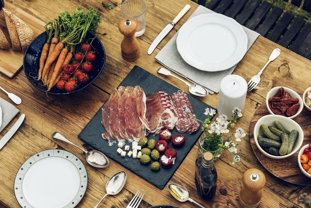

Restaurante 360 Istanbul - en la calle Istiklal
360Istanbul es un famoso restaurante, bar y club nocturno situado en un edificio de apartamentos del siglo XIX con vistas a la antigua fila de embajadas en Beyoglu, en la famosa calle Istiklal. Ofrece unas vistas de 360 grados de Estambul que quitan el aliento. 360 está abierto para el almuerzo y la cena, y ofrece un giro en el moderno meze turco fusionado con la cocina tradicional turca y la cocina internacional, así como una exclusiva selección de vinos. Muchos de los platos principales son nuestras recetas originales que mezclan de nuevo influencias turcas e internacionales, junto con una ingeniosa y extensa carta de vinos y postres.
Conoce Buenos Aires
Como la Capital Gastronómica de Iberoamérica, un reconocimiento que obtuvo en 2017, Buenos Aires tiene una propuesta de cocina inagotable para degustar las mejores recetas. La ciudad porteña posee una de las cocinas más sabrosas a nivel internacional y ha recibido numerosos reconocimientos por parte de las organizaciones más prestigiosas del mundo de la gastronomía. Las opciones son inabarcables. Teatro del under, cervecerías artesanales, bares sofisticados, música en vivo, noches de jazz o, por qué no también, de electrónica bajo el ala de DJs internacionales.Tradiciones en Perú
Algunos de los platos típicos de la gastronomía de Perú más reconocidos son el ceviche y el arroz con mariscos. En cuanto a postres, el manjar blanco junto con el arroz con leche, la mazamorra morada y los picarones son los más tradicionales. La bebida bandera del Perú es el pisco. De igual manera, otras bebidas típicas peruanas son la chicha morada y la chicha de jora.